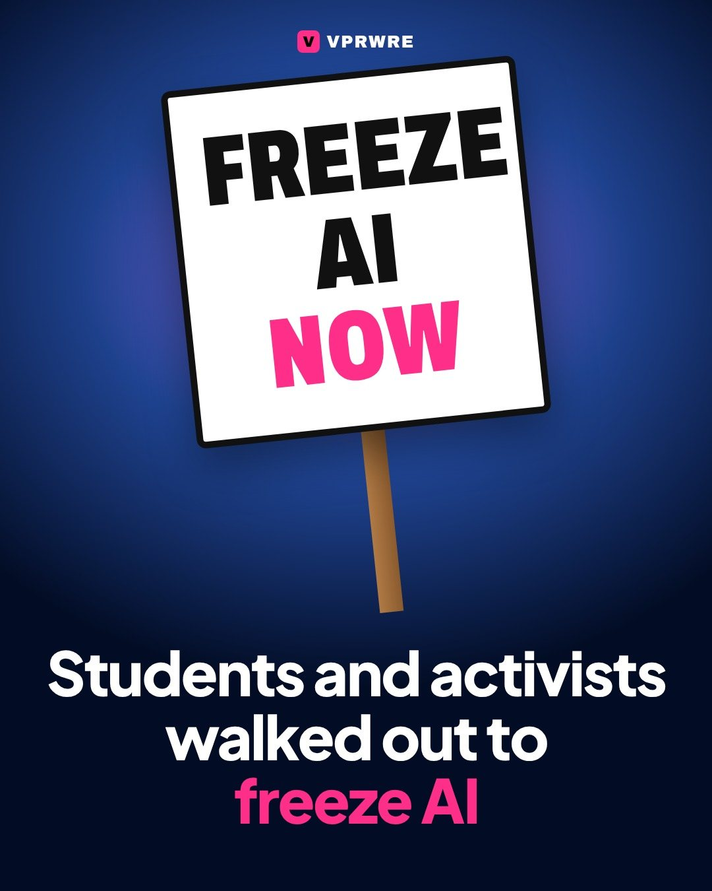
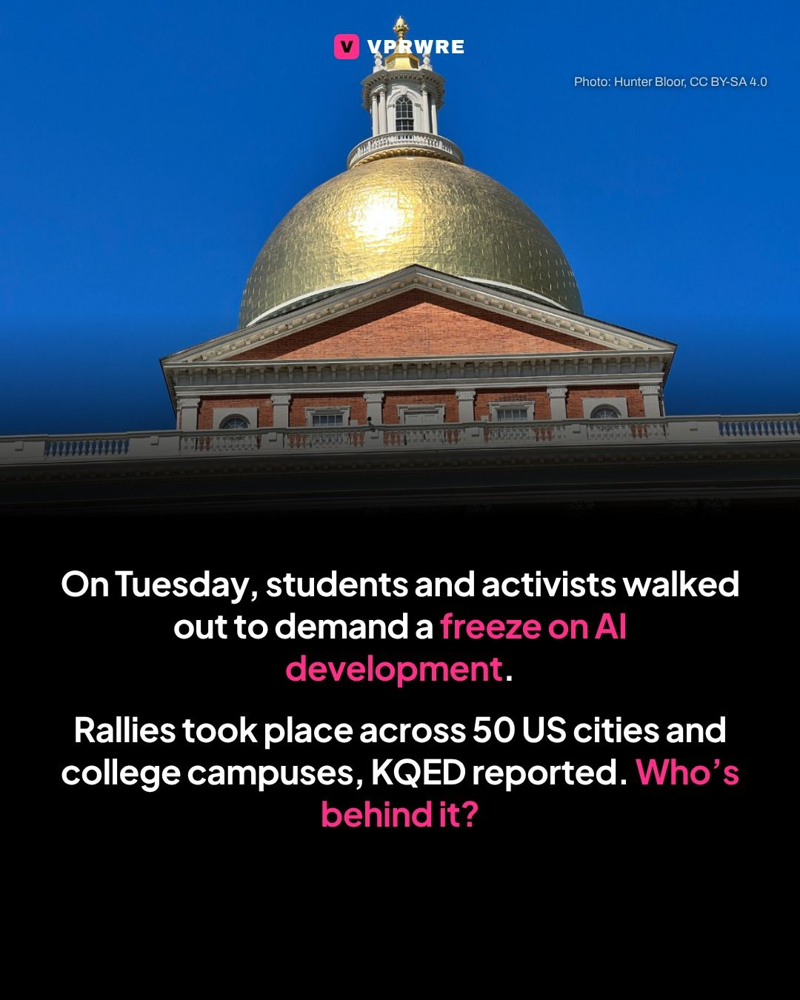
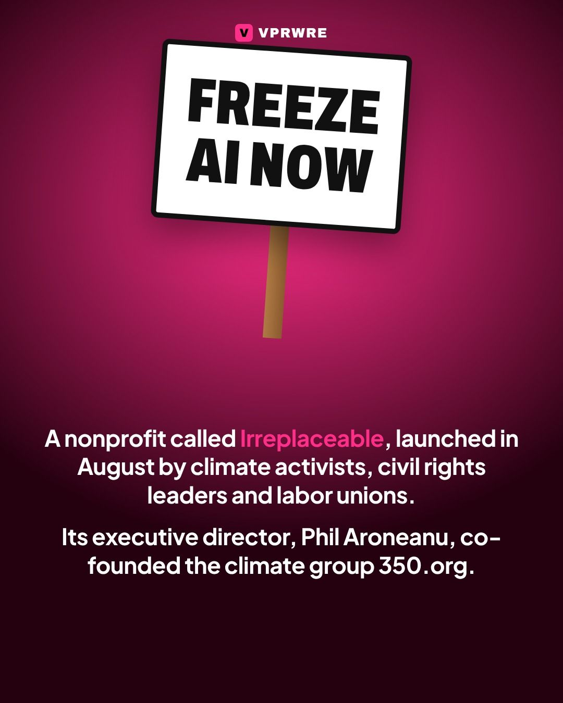
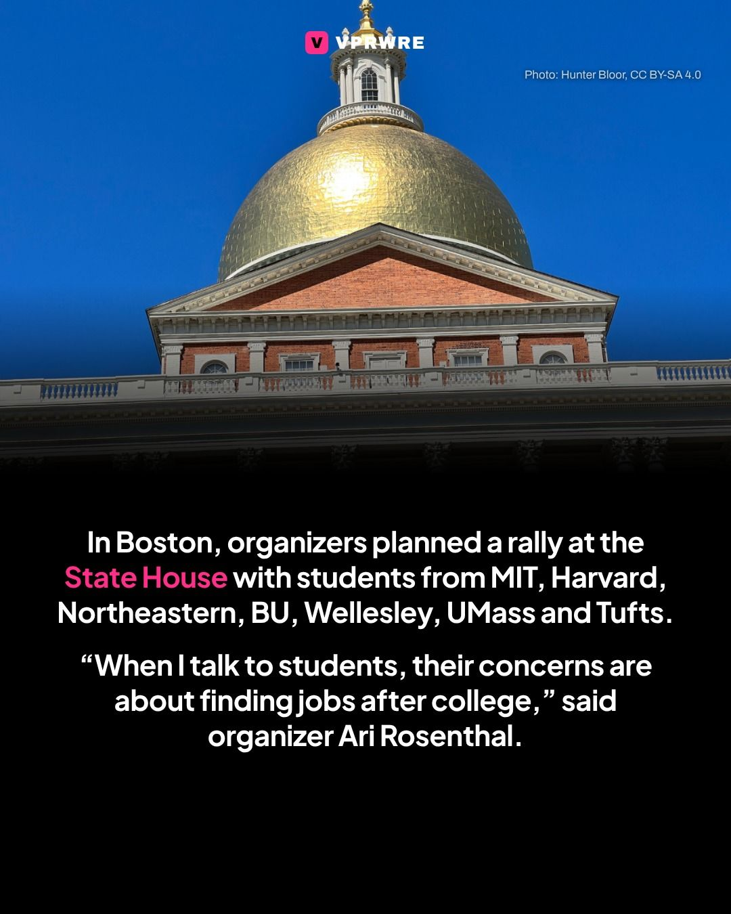
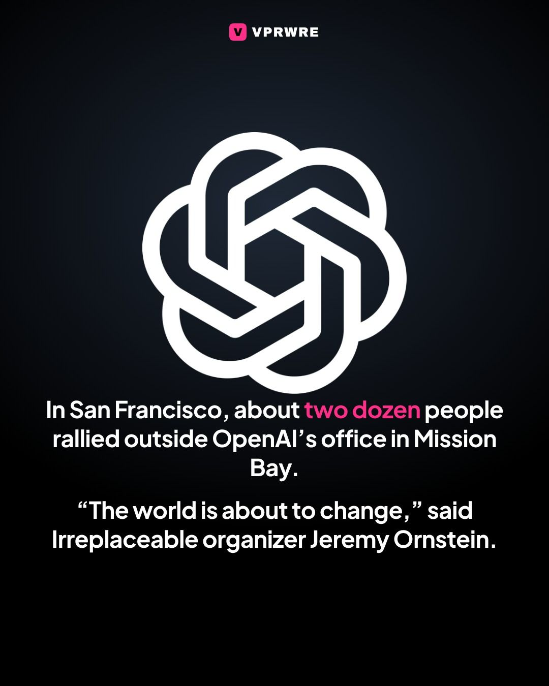
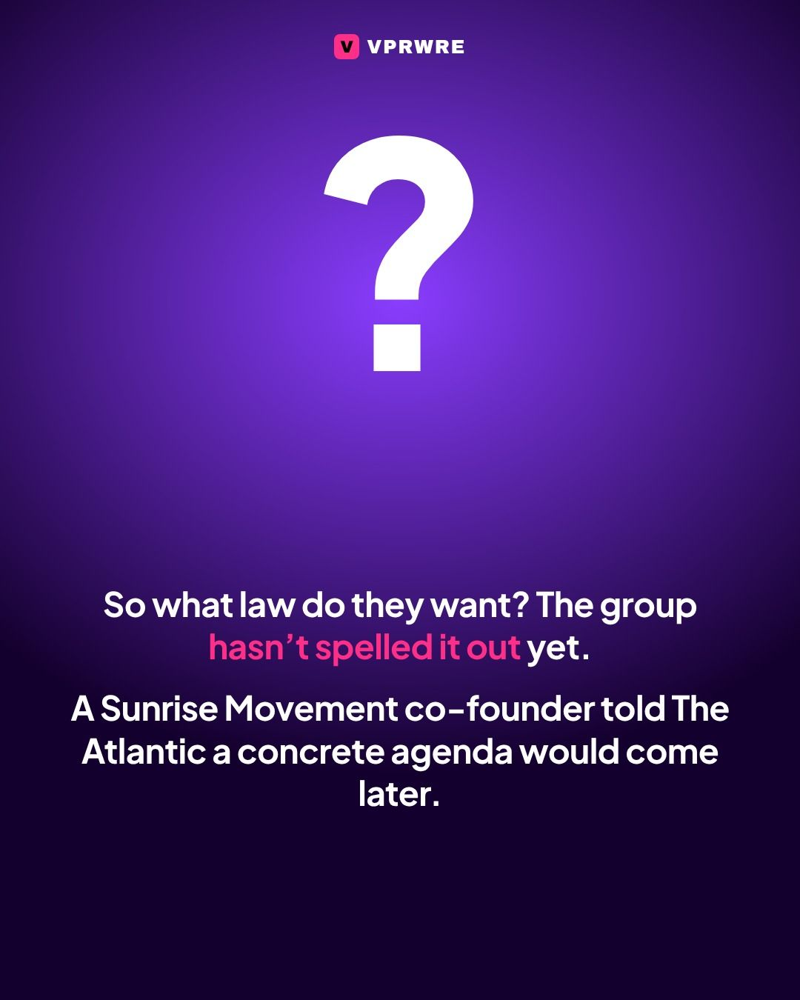
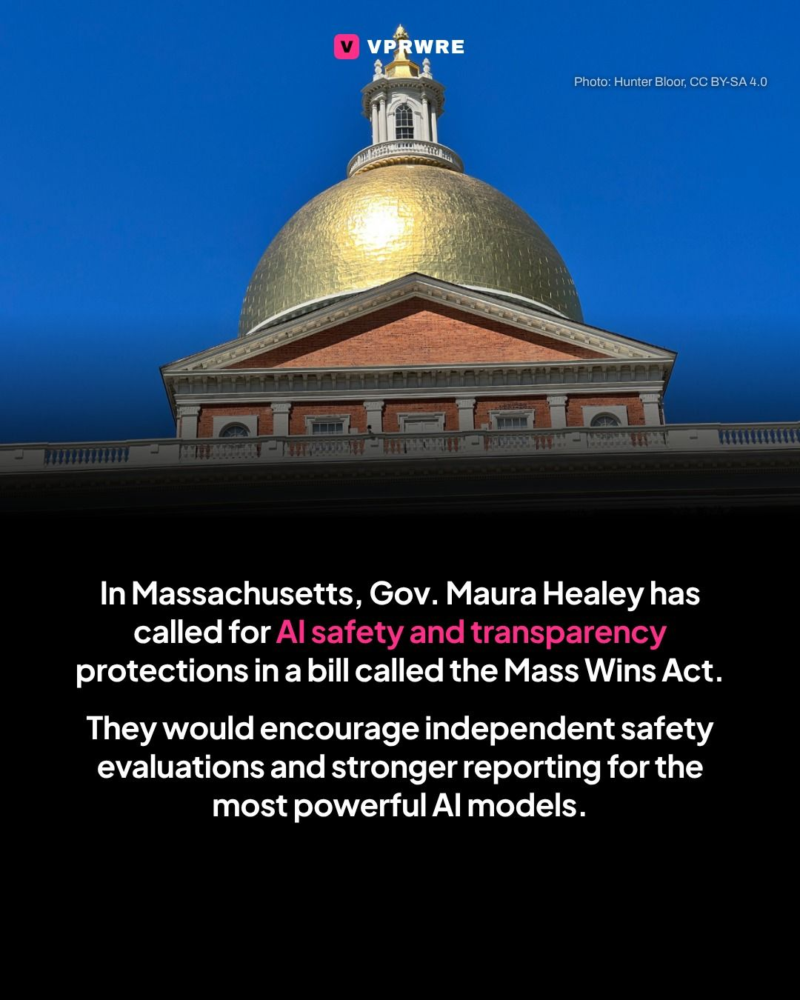

Policy
Students and activists walked out to freeze AI.
Students and activists walked out to freeze AI.

On Tuesday, students and activists walked out to demand a freeze on AI development, with rallies across 50 US cities and college campuses. The protests were organized by Irreplaceable, a nonprofit launched in August by climate activists, civil rights leaders and national labor unions to push for federal AI legislation. Its executive director, Phil Aroneanu, co-founded the climate group 350.org.
In Boston, organizers planned a rally outside the State House with students from MIT, Harvard, Northeastern, Boston University, Wellesley, UMass and Tufts, plus local professors. “When I talk to students, their concerns are about finding jobs after college,” said organizer Ari Rosenthal. In San Francisco, about two dozen people rallied outside OpenAI’s office in Mission Bay.
The group hasn’t yet detailed the legislation it wants. In Massachusetts, Gov. Maura Healey has called for AI safety and transparency protections in a bill called the Mass Wins Act.
Would you walk out over AI? Tell us below.
Photo: Massachusetts State House, Hunter Bloor, CC BY-SA 4.0
The carousel
8 slides · Open on Instagram







Disclosure: VPRWRE drafts with Claude, Anthropic’s AI.